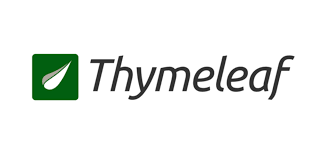

Hello
타임리프

study1 text object expression
study1 text object expression2
study2 form object expression
study3 link href querystring
study4 session param
study5 if unless switch
study6 loop each
study7 loop each lists
study8 loop each numbers
study9 javascript
study10 thymeleaf layout
study11 thymeleaf layout simple